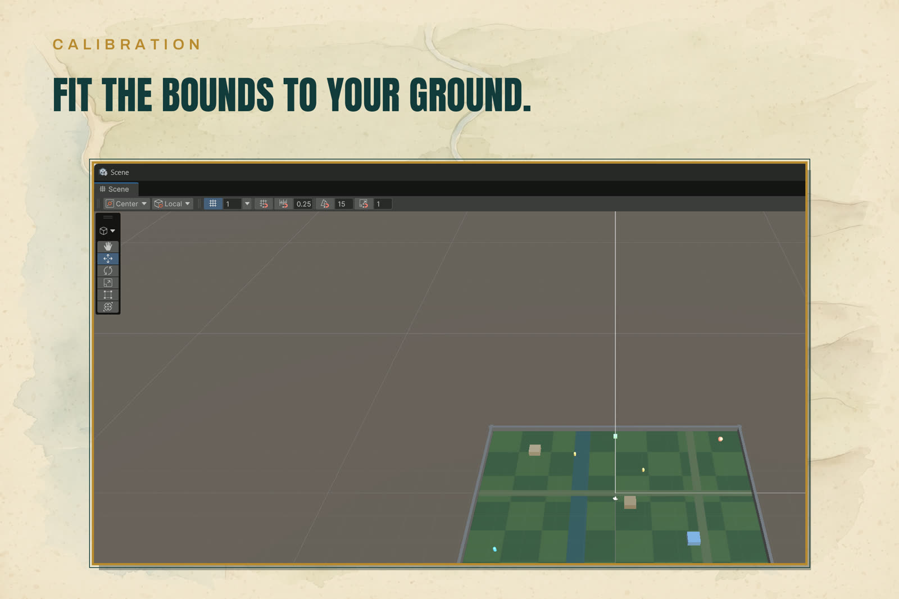

Projection and Calibration
Every map in MiniAtlas Pro is one projection: a pair of world bounds (center + size) on a plane, converting world positions to normalized map positions (0..1 across the bounds) and back exactly.

- Plane XZ for 3D games: world X runs east across the map, world Z runs north up it.
- Plane XY for 2D games: world X east, world Y north.
The calibration act
Calibration is fitting the bounds to your world. It is one click:
- Select your ground object in the scene (anything with a renderer or a collider — the ground plane, a terrain, a tilemap object).
- In the MiniAtlas Pro window, click Fit Bounds to Selected.
The settings' bounds center and size now match the object's bounds on the map plane. The status line reports the fitted size in world units. That is the only measurement the kit ever asks for — there is no second step where you nudge a camera or align a render.
The background picture
Your background art is a top-down picture of your world drawn inside those bounds. The window compares the image aspect with the bounds aspect and tells you in plain words:
- "Background aspect 1.50 matches bounds aspect 1.50." — you are set.
- "Background aspect 1.50 does not match bounds aspect 1.33 — the map will stretch. Resize the image or adjust the bounds." — fix one side or the other before judging the result.
With no background assigned, the starter grid background from Run Setup stands in. The map — fog, markers, both views — works fully on it while your art is being made.
The math (for your own code)
MapProjection is public and pure:
WorldToNormalized(world)— unclamped: points outside the bounds leave 0..1, so views can detect off-map positions.WorldToNormalizedClamped(world)— the same point clamped onto the border.NormalizedToWorld(normalized)— the exact inverse.Contains(world),Aspect.
Degenerate bounds (zero or negative size) are rejected at construction with an argument exception — a setup-time validation, never a silent divide-by-zero in play.